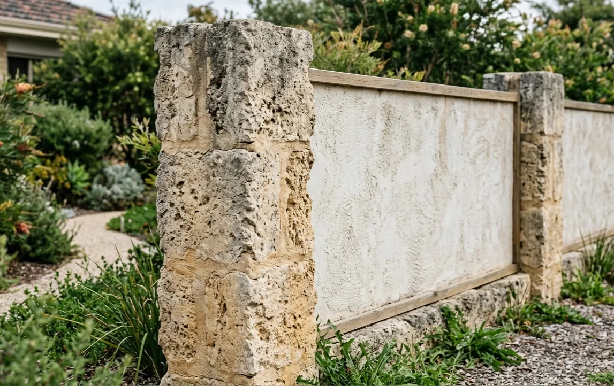
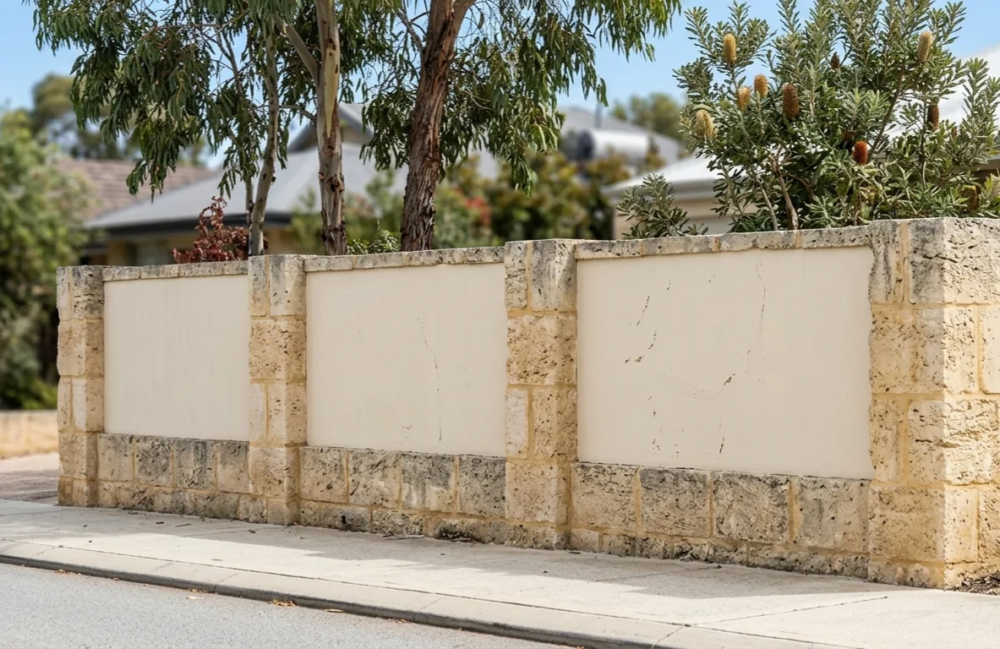

Limestone fencing in Perth
Solid limestone fences, pier and infill, and what moves the price.
- Free quotes, no obligation
- Perth metropolitan area
A limestone fence is a front or boundary fence, not a retaining wall. With level ground on both sides it holds up only itself, which means a lighter footing, no drainage system behind it, and a different cost profile.
If the ground is higher on one side, the wall is retaining soil and the requirements change substantially. That is covered on the [limestone retaining walls page](limestone-retaining-walls.html).

Solid limestone or pier and infill
There are two common formats, and the choice drives most of the cost.
Solid limestone fence. Limestone the full length and height, for privacy, noise and appearance. Perth block sizes and the appetite for solid front walls make this a frequent job. It is the more expensive format per metre because it is block the whole way.
Pier and infill. Limestone piers with infill panels between them, commonly steel, aluminium slat, timber or rendered panel. This is the front fence format seen repeatedly across the western and southern suburbs. It costs less across a full frontage because the piers carry the structure and the infill is cheaper per metre.
A limestone pier and slat infill fence still reads as a limestone fence from the street, at a lower cost than solid block.
What moves the price on a fence
- Solid versus pier and infill, the largest single design decision
- Pier spacing. Fewer piers, more infill, lower cost, different look
- Infill material. Steel, aluminium slat, timber and rendered panel all sit at different price points
- Height and footing. Taller piers need deeper footings, and wind load matters more on solid infill than on slats
- Block type. Natural or reconstituted, and whether it is rendered
- Gates. Vehicle gates carry cost that has nothing to do with limestone, including motors, posts and electrical work
- Access and length, as with any limestone job
Natural or reconstituted for fencing
Appearance carries more weight on a fence than on a retaining wall, because a fence is usually visible from the street.
Natural block gives the varied quarried face and more character, and is lighter to handle. Slower to lay, and generally the more expensive install for the same fence.
Reconstituted block is uniform and faster to lay. It suits rendered finishes and contemporary designs, because a uniform substrate renders more predictably.
Mortar colour matters here too. Tinted mortar matched to the limestone reads as one material; default grey mortar shows every joint. On a street-facing fence the difference is obvious once it is pointed out, and it is worth raising when comparing quotes.
Front fence approval and setbacks
A front fence is not automatically exempt from approval just because it is not retaining. Height limits for front fences, sight line requirements at driveways and corners, and local planning policy on street walls all commonly apply, and they are set by the council or shire.

Front fence provisions in particular catch people out, because the height allowed within the front setback is often lower than elsewhere on the block, and there are sometimes requirements about visual permeability, meaning how much can be seen through the fence.
This table was originally researched for a companion site covering brick front fences, by contacting each local government individually. Front fence height, permeability and sightline provisions are set by planning policy against the fence structure itself, not the construction material: several councils' own pages (for example the City of Melville's) name limestone alongside brick and block under the same masonry rule, so the figures apply equally to limestone fencing. Re-check any row before relying on it; council policy changes without notice.
| Local Government | Front fence height limit | Permeability requirement | Truncation / sightline | Council page | Last checked |
|---|---|---|---|---|---|
| City of Bayswater | Generally front fences are permitted to be solid up to a maximum height of 1.2m when measured from street level. | Approximately 50% visually permeable up to a maximum height of 1.8m when measured from street level. | Fences adjacent to vehicle access points (where driveways meet the street) or intersecting street corners must maintain clear driver visibility lines. | Fences and retaining walls | 2026-07-28 |
| City of Belmont | 1800mm in height. | Permeable above 1200mm in height. | Not exceeding 750mm in height where located within 1500mm of where a driveway intersects a street frontage boundary. | Front fence | 2026-07-28 |
| City of Canning | Fences within the primary street setback area must not exceed 1.2m in height. | Solid lower sections are generally restricted to 1.2m; any height extending above that (up to 1.8m) must be visually permeable infill. | Fences must be truncated or reduced to a maximum of 0.75m within a 1.5m splay where a driveway meets a public street, or where two streets/rights-of-way intersect on a corner lot. | Local planning policy (PDF) | 2026-07-28 |
| City of Fremantle | Fences within the primary street setback area can go up to 1.8m, with decorative piers allowed up to 2.0m. | Above the solid lower threshold (1.2m standard, lower in some heritage areas), the fence must be at least 50% visually permeable up to the 1.8m maximum. | Fences adjacent to a driveway, vehicle access point or street corner must provide a 1.5m x 1.5m visual truncation or drop to a maximum of 0.75m above natural ground level. | Local Planning Policy 2.8 - Fences (PDF) | 2026-07-28 |
| City of Melville | Any fence taller than 1.8m total, or a masonry front fence (limestone, brick or similar) higher than 0.75m, requires formal local government or building approval. | Any portion between 1.2m and 1.8m high must be visually permeable. | Fences must drop to a maximum of 0.75m within 1.5m of where a driveway meets the property boundary or street. | Building a fence or retaining wall | 2026-07-28 |
| City of Nedlands | Maximum of 1.2m above natural ground level without requiring approval. | Up to 1.8m is permitted provided any height above 1.2m is visually permeable. | A 1.5m x 1.5m corner truncation is required where driveways meet footpaths and at street-intersection corner lots. | Gazetted planning policy (PDF) | 2026-07-28 |
| City of Perth | Maximum 1.2m solid construction above the adjacent pavement or natural ground level without requiring special planning/building approval. | Any section built higher than 1.2m must be visually permeable, with upper infill achieving 75-80% openness depending on precinct guidelines. | Where a driveway meets a public street, fences must be truncated or reduced to a maximum of 0.75m within a 1.5m splay. | Perimeter Fencing Policy (PDF) | 2026-07-28 |
| City of South Perth | Solid front fences, walls or pillar piers up to 1.2m high from natural ground/verge level. | Below 1.2m the fence can be fully solid; between 1.2m and 1.8m the portion above 1.2m must be visually permeable. | Fences, walls and landscaping must be reduced to 0.75m (highly permeable) within a 1.5m splay where a driveway meets a public street. | Local planning policies | 2026-07-28 |
| City of Stirling | Solid parts of a front fence or wall can be built up to 1.2m high from natural ground level. | Total fence height can reach 1.8m without planning approval; anything above 1.2m (up to 1.8m) must be visually permeable. | Fences near a driveway/street intersection are typically restricted to 0.75m within a 1.5m sightline triangle unless fully permeable. | Street walls and fences information | 2026-07-28 |
| City of Subiaco | Maximum 0.9m solid from natural ground level; any front fence or solid portion exceeding 0.9m (or 1.2m in some precincts/heritage areas) requires approval. | Any part higher than 0.9m from natural ground level must be visually permeable. | Fences must be truncated to 0.75m within 1.5m of a driveway/public street, or within a 3m radius where two public streets intersect. | Residential development policy (PDF) | 2026-07-28 |
| City of Vincent | Any solid wall higher than 1.2m, or any overall fence structure exceeding 1.8m, requires approval. | The fence must be visually permeable above 1.2m, with a minimum of 50% continuous gaps (generally 40-50mm). | Where a fence is higher than 0.75m, a 1.5m x 1.5m visual truncation is required on each side of a driveway crossover. | Front fence information sheet (PDF) | 2026-07-28 |
| Shire of Peppermint Grove | Approval required for front fences or pillars exceeding a solid 900mm limit, or for solid alternatives up to 1.8-2.1m on merit. | Any part of the front boundary fence higher than 900mm must use an open-aspect design (open timber, wrought iron, steel or aluminium palings). | Fences adjacent to driveways/crossovers must maintain clear visibility triangles, typically restricting solid elements above 750-900mm within safety splay zones. | Fencing | 2026-07-28 |
| Town of Bassendean | Up to 1.8m from natural ground level (or the base of a supporting retaining wall) can meet deemed-to-comply criteria, subject to permeability rules. | Must be visually permeable above 1.2m from natural ground level; the lower 1.2m can be solid. | Must not exceed 750mm within 1.5m of a driveway intersecting a public street or right-of-way, or at intersecting streets/corner lots. | Building or altering a fence (PDF) | 2026-07-28 |
| Town of Cambridge | Approval needed for front fences or portions exceeding 0.75m solid or going up to 1.8-2.0m; piers can reach 1.8m at up to 350mm x 350mm. | Any portion higher than 0.75m must be visually transparent or open style. | A 1.5m x 1.5m sightline truncation is required where a driveway intersects the street boundary. | Streetscape policy (PDF) | 2026-07-28 |
| Town of Claremont | Free-standing front fences exceeding 1.2m within the primary street setback area require approval. | Above 1.2m, more than 50% of the fence must be visually permeable. | Fences flanking a driveway intersecting a public street must reduce to 750mm near the property line/crossover. | Front fences policy (PDF) | 2026-07-28 |
| Town of Cottesloe | Any freestanding front fence or pillar exceeding 1.2m (or 900mm for certain solid configurations) requires approval. | Any portion above the solid limit (1.2m, or 900mm where specified) must be visually permeable. | Fences near driveways/crossovers are typically restricted to 750mm within a visual truncation triangle. | Planning FAQs | 2026-07-28 |
| Town of East Fremantle | Approval is required if any section exceeds 1.8m total, solid portions exceed 1.2m, or the property is in a heritage area; a building permit is needed if masonry exceeds 750mm. | Any part above 1.2m up to the 1.8m maximum must be at least 60% visually permeable. | Fences at driveways or street corners must provide safety sightlines. | Front fence fact sheet (PDF) | 2026-07-28 |
| Town of Mosman Park | No local planning policy for front fences was found, so the state default applies: solid construction up to 1.2m above natural ground level. | Above 1.2m the fence must be visually permeable up to a 1.8m maximum (WA-wide Residential Design Codes default, not Mosman Park-specific). | Not specified in a Mosman Park document found; check with the Town directly. | Residential Design Codes (state default) | 2026-07-28 |
| Town of Victoria Park | Solid or opaque front fences and masonry walls within the primary street setback area are restricted to 1200mm. | Above a solid base (typically 600-1200mm), the fence must be at least 50% visually permeable up to 1800-2000mm total. | Fences adjacent to a driveway must provide a clear 1500mm x 1500mm visibility truncation. | Fencing Local Law 2020 (PDF) | 2026-07-28 |
| City of Kalamunda | Any front fence exceeding 1.2m requires a Development Application and Building Permit. | Any portion above 1.2m must maintain at least 50% visual permeability. | Fences must be restricted to 0.75m within 1.5m of where a driveway meets a public street, or where two streets intersect. | Local Planning Policy 13 (PDF) | 2026-07-28 |
| City of Swan | Maximum total height of 1.8m (up to 2.1m for decorative piers/posts in specific designs). | Areas above 1.2m must be visually permeable, typically at least 50% open. | Fences must be truncated to 0.75m within a 1.5m x 1.5m area where a driveway meets a public street, or where two streets intersect. | Local Planning Scheme 17, Schedule 5 (PDF) | 2026-07-28 |
| Shire of Mundaring | Written consent is needed for any freestanding front fence greater than 1.2m. | Where approval is granted above 1.2m, the design must generally maintain open or splayed construction. | Fences either side of a driveway must be splayed or angled 1.5m into the lot, or reduced to 750mm within 1.5m of the driveway/street junction. | Fencing local law (PDF) | 2026-07-28 |
| City of Joondalup | A Development Application is needed if the fence exceeds 1.8m or fails permeability limits; a building permit is required for masonry over 0.75m. | Any part above 1.2m must be visually permeable. | Fences must be truncated or reduced to 0.75m within a 1.5m splay where a driveway meets the front boundary. | Fencing and street walls | 2026-07-28 |
| City of Wanneroo | Solid fences up to 1.2m, or up to 1.8m if the portion above 1.2m is visually permeable. | Any portion above 1.2m must be at least 50% visually permeable. | Safety sightlines are mandatory next to driveway access points or on corner lots. | Front fence information sheet (PDF) | 2026-07-28 |
| City of Armadale | Written consent is required if a freestanding front fence exceeds 1.2m within the primary street setback area. | Any portion above 1.2m above natural ground level must be visually permeable. | Fences must be truncated or reduced to 750mm within a 1.5m splay. | Fencing Local Law 2011 (PDF) | 2026-07-28 |
| City of Gosnells | Anything higher than 1.2m solid, or higher than 1.8m overall, or masonry over 0.75m needs a building or council permit. | Any part higher than 1.2m must be visually permeable. | Fences next to a driveway must provide a clear 1.5m x 1.5m visual truncation, or drop to a maximum of 0.75m. | Front and secondary street fencing (PDF) | 2026-07-28 |
| Shire of Serpentine-Jarrahdale | Any front fence or wall exceeding 1.2m solid, or rising higher than 1.8m overall, requires a building permit and/or planning approval. | Above 1.2m, the upper portion must be visually permeable. | Fencing that abuts a driveway, crossover or street corner must provide a clear view for safety. | Front fences | 2026-07-28 |
| City of Cockburn | Solid walls higher than 1.2m, overall fences taller than 1.8m, or use of specialty materials, may require approval. | Any part higher than 1.2m from natural ground level must be visually permeable. | Must incorporate a 1.5m x 1.5m visual truncation on each side of a driveway if the fence is taller than 750mm. | Fences and retaining walls | 2026-07-28 |
| City of Kwinana | No council approval or building permit is needed if the fence is 1.2m or lower in the front setback area. | The portion from 1.2m up to 1.8m high must be visually permeable. | Solid fences or walls more than 750mm high are restricted within 1.5m of where a driveway meets the street boundary. | Fence information sheet (PDF)/information-sheets-and-guides/2020/fence-information-sheet) | 2026-07-28 |
| City of Rockingham | Max 1.2m for standard residential front setback areas; max 0.9m for RMD (medium density) zoned lots. | Height above 1.2m (or 900mm in some medium-density policies) generally must be visually permeable, conforming to the Residential Design Codes or local law. | Fences adjacent to driveways must provide a clear sightline truncation (typically 1.5m x 1.5m, or restricted below 0.75-0.9m). | Fencing Local Law 2020 (PDF) | 2026-07-28 |
Town of Mosman Park: its fencing local law was under community consultation as part of a 2026 local laws review at the time this was checked, with a council decision expected mid-2026. The state-default figures above may be superseded; re-check before relying on this row.
The building permit and planning approval distinction is explained in the approval section on the retaining walls page, and it applies to fencing as much as to retaining.
Fences on a shared boundary
A limestone fence on a common boundary is a shared asset and a shared cost question. The Dividing Fences Act 1961 (WA) governs dividing fences and cost sharing between adjoining owners.
Who pays what share, whose land the fence sits on, and who maintains it are best settled in writing before construction.
Limestone Fencing: Frequently Asked Questions
Is a limestone fence cheaper than a solid limestone wall?
Pier and infill generally costs less per metre than solid limestone at the same height, because the infill material is cheaper than block and faster to install. How much less depends on pier spacing and infill choice.
Can a limestone fence be rendered?
Yes, and reconstituted block is generally the better substrate because the uniform face renders more predictably.
Do I need approval for a front fence?
Often, yes. Front fence height limits and visual permeability rules are set by the council or shire, and the limit within the front setback is often lower than elsewhere on the block. Check the front fence section above.
Can a limestone fence be built on the boundary?
Usually, subject to the council or shire's provisions and the neighbour question. Cost sharing sits under the Dividing Fences Act 1961 (WA) and is best agreed in writing first.
Tell us about your job
A local contractor will be in touch if they can help.
If a limestone contractor covers your job, they'll be in touch. If nothing's a fit, we'll tell you and point you somewhere useful. Your details are used to get your job quoted and are handled as set out in our privacy policy.